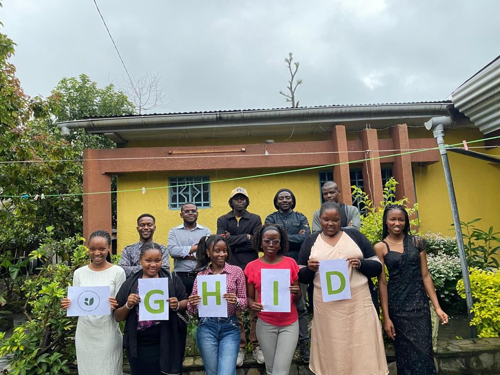
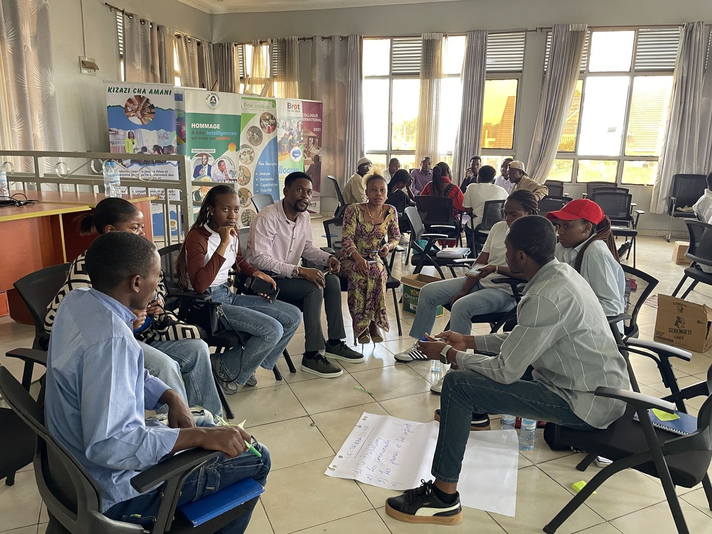
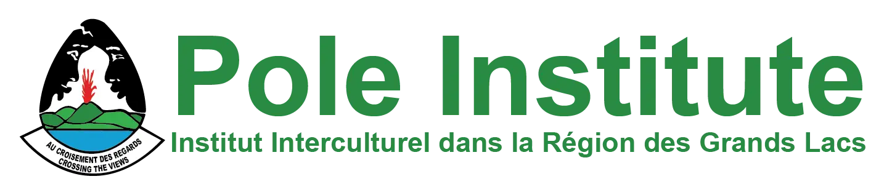
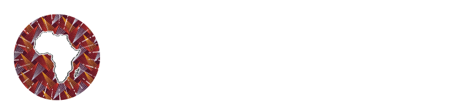
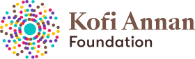
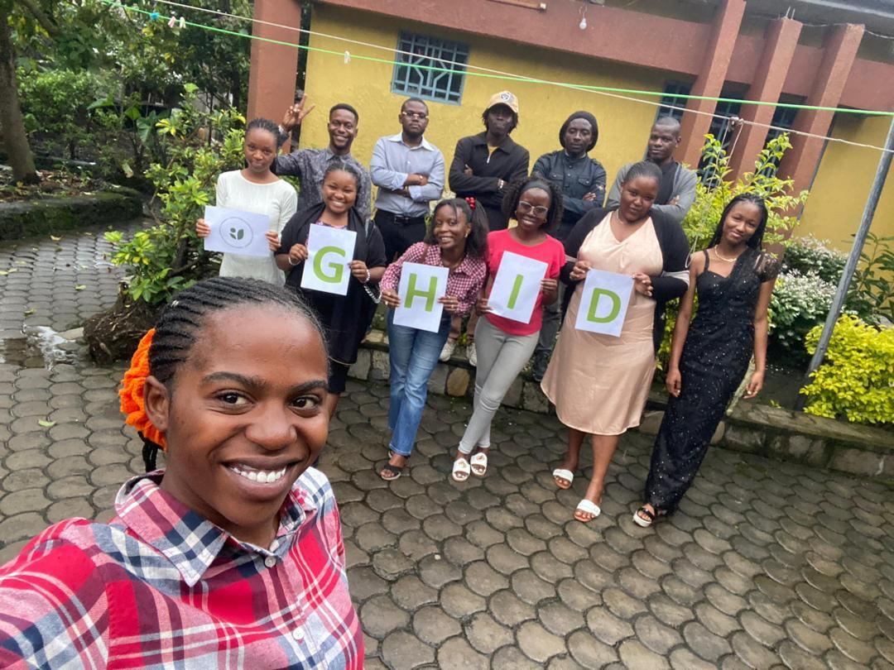

Cultivating peace.Inspiring critical thinking.Building resilient communities. Cultiver la paix.Éveiller l'esprit critique.Bâtir des communautés résilientes.
Goma's young people have lived through war, displacement and the eruptions of Nyiragongo. We believe they are also the ones who will rebuild. GHID gives them the skills, the voice and the opportunities to lead. Les jeunes de Goma ont traversé la guerre, les déplacements et les éruptions du Nyiragongo. Nous croyons que ce sont aussi eux qui reconstruiront. GHID leur donne les compétences, la voix et les opportunités pour diriger le changement.
young people, women & leaders trained or mobilisedjeunes, femmes et leaders formés ou mobilisés
community projects deliveredprojets communautaires réalisés
communities supportedcommunautés accompagnées
trees plantedarbres plantés
Since February 2022 · Photos: GHID activities in Goma · Illustration: Nyiragongo, North KivuDepuis février 2022 · Photos : activités de GHID à Goma · Illustration : Nyiragongo, Nord-Kivu
Who we areQui nous sommes
A green hope, born in GomaUn espoir vert, né à Goma
Green Hope Initiative for Development is a nonprofit founded on 14 February 2022 by young leaders from North Kivu. Together with women, displaced families and local communities, we work for peace, dignified livelihoods, a healthy environment and better health.Green Hope Initiative for Development est une organisation à but non lucratif fondée le 14 février 2022 par de jeunes leaders du Nord-Kivu. Avec les femmes, les familles déplacées et les communautés locales, nous agissons pour la paix, des moyens de subsistance dignes, un environnement sain et une meilleure santé.
What we doNos domaines d'intervention
Four programs, one goal: resilient communitiesQuatre programmes, un seul but : des communautés résilientes
Peace & leadershipPaix et leadership
Community dialogue, mediation, media literacy and action against hate speech.Dialogue communautaire, médiation, éducation aux médias et lutte contre les discours de haine.
Learn more →En savoir plus →Economic empowermentAutonomisation socio-économique
Vocational and entrepreneurship training, mentoring and support for income-generating activities.Formations professionnelles et entrepreneuriales, mentorat et appui aux activités génératrices de revenus.
Learn more →En savoir plus →Environment & climateEnvironnement et climat
Tree planting, waste recycling, eco-pavers from plastic and climate education.Reboisement, recyclage des déchets, pavés écologiques en plastique et éducation climatique.
Learn more →En savoir plus →Health communicationCommunication et santé
Reliable health information, GBV prevention, sexual and reproductive health, mental well-being.Information sanitaire fiable, prévention des VBG, santé sexuelle et reproductive, bien-être mental.
Learn more →En savoir plus →
Why GHIDPourquoi GHID
Local, youth-led and connectedLocal, porté par les jeunes, connecté
An integrated approachUne approche intégrée
Conflict, poverty, climate and health are linked. Our programs are designed to work together.Conflits, pauvreté, climat et santé sont liés. Nos programmes sont conçus pour se renforcer mutuellement.
Built with communitiesConçu avec les communautés
We design every activity with the people it serves, so they own the results after we leave.Chaque activité est conçue avec les personnes concernées, pour qu'elles s'approprient les résultats dans la durée.
Proven teamUne équipe expérimentée
Experience in community projects, strategic communication, advocacy and sustainable development.Expérience en projets communautaires, communication stratégique, plaidoyer et développement durable.
Trusted partnershipsDes partenariats de confiance
We work with national and international institutions to scale our impact.Nous collaborons avec des institutions nationales et internationales pour amplifier notre impact.
Voices from the communityTémoignages
What participants sayCe que disent les participants
“Thanks to GHID's training I discovered community leadership. Today I can organise peace initiatives in my neighbourhood.”« Grâce aux formations de GHID, j'ai découvert le leadership communautaire. Aujourd'hui, je peux organiser des initiatives de paix dans mon quartier. »Grâce M., community youth leaderjeune leader communautaire
“GHID's environmental activities taught us that protecting nature means protecting our future. Our community now takes part in reforestation and waste management.”« Les activités environnementales de GHID nous ont appris que protéger la nature, c'est protéger notre avenir. Notre communauté participe aujourd'hui au reboisement et à la gestion des déchets. »Jean-Claude K., environmental programs participantbénéficiaire des programmes environnementaux
Partners & networksPartenaires et réseaux
We work alongsideIls travaillent avec nous

Pole Institute- International Alert

Yale Model African Union
Kofi Annan Foundation
Together, let's turn challenges into opportunitiesEnsemble, transformons les défis en opportunités
Every contribution strengthens peace, protects our environment and helps young people and women in eastern DR Congo build the future they want.Chaque contribution renforce la paix, protège notre environnement et aide les jeunes et les femmes de l'Est de la RDC à construire l'avenir qu'ils souhaitent.
